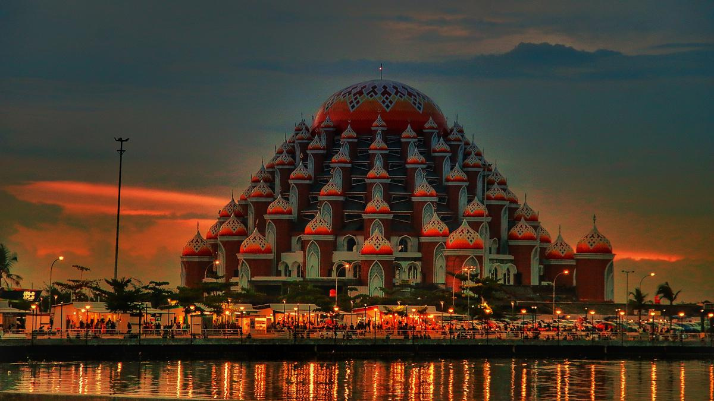

Sejarah Kota Makassar

Makassar merupakan ibu kota Provinsi Sulawesi Selatan yang sejak dahulu dikenal sebagai pusat perdagangan maritim Indonesia Timur.
Kota Makassar, yang dulunya dikenal sebagai Ujung Pandang, memiliki sejarah panjang yang dimulai dari pelabuhan kecil di muara Sungai Tallo pada akhir abad ke-15 dan berkembang menjadi pusat perdagangan yang penting di Indonesia Timur.
Awal Mula Kota Makassar
Kota Makassar terletak di pesisir barat daya Pulau Sulawesi dan awalnya merupakan pelabuhan kecil di muara Sungai Tallo. Pada akhir abad ke-15, pelabuhan ini berada di bawah Kerajaan Siang.
Pada pertengahan abad ke-16, pelabuhan Tallo bersatu dengan Kerajaan Gowa yang kemudian menjadi kekuatan dominan di wilayah tersebut.
Raja Gowa ke-9, Tumaparisi Kallonna, memindahkan pusat kerajaan ke tepi pantai dan mendirikan benteng di muara Sungai Jeneberang yang menjadi inti dari Kota Makassar saat ini.